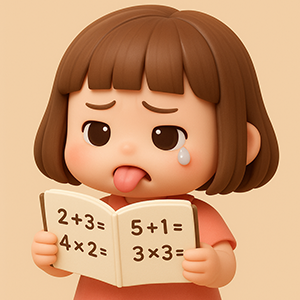

Projet Thelma
Développons un programme pour aider une écolière de CE1 à réviser ses tables !
Thèmes abordés

- variables,
- conditions,
- boucles,
- I/O,
- fichiers,
- aléatoire,
- fonctions,
- chrono
Avancement
Programme par défaut en C :
#include <stdio.h> // La bibliothèque qui permet d'utiliser printf.
int main() { // La fonction principale, le point d'entrée du programme.
printf("hello, world!"); // Affiche "hello, world!" dans la sortie standard.
return 0; // R.A.S., on signale à l'OS que tout s'est bien passé.
}
-
Afficher un calcul et son résultat
-
En “dur”
-
En calculant vraiment
-
-
Afficher une table d'addition
-
Avec 10 printf
printf("%d + %d = %d\n", 1, 0, 1 + 0); printf("%d + %d = %d\n", 1, 1, 1 + 1); printf("%d + %d = %d\n", 1, 2, 1 + 2); printf("%d + %d = %d\n", 1, 3, 1 + 3); printf("%d + %d = %d\n", 1, 4, 1 + 4); printf("%d + %d = %d\n", 1, 5, 1 + 5); printf("%d + %d = %d\n", 1, 6, 1 + 6); printf("%d + %d = %d\n", 1, 7, 1 + 7); printf("%d + %d = %d\n", 1, 8, 1 + 8); printf("%d + %d = %d\n", 1, 9, 1 + 9); -
Avec une boucle
// Avec une boucle while (tant que) qui répète les instructions qu'elle contient tant que la condition est vraie. int n2 = 0; // Utilisation d'une variable pour stocker la valeur à ajouter qui s'incrémente à chaque itération de la boucle. while (n2 < 10) { printf("1 + %d = %2d\n", n2, 1 + n2); n2 = n2 + 1; // On incrémente n2 sinon on a une boucle infinie. } // Avec une boucle for (pour) for (n2 = 0; n2 < 10; n2 = n2 + 1) { printf("1 + %d = %2d\n", n2, 1 + n2); } -
En laissant le choix à l'utilisateur
-
-
Afficher toutes les tables
-
Pour un opérateur en "dur"
int n1 = 1, n2 = 0; // Boucles imbriquées // La première permet de passer de table en table while (n1 < 10) { printf("Table de %d\n----------\n", n1); // La seconde (déjà vue) affiche chaque table while (n2 < 10) { printf("%d + %d = %2d\n", n1, n2, n1 + n2); n2 = n2 + 1; } n1 = n1 + 1; n2 = 0; printf("\n"); } -
Pour un opérateur au choix
#include <stdio.h> int main () { int signe, n1, n2 = 0; // Choix du signe do { printf("De quelle opération affiche-t-on la table ?\n1. Addition\n2. Soustraction\n3. Multiplication\n> "); scanf("%d", &signe); } while (signe != 1 && signe != 2 && signe != 3); // Choix de la table do { printf("Quelle table [0-9] souhaitez-vous afficher ?\n"); scanf("%d", &n1); } while (n1 < 0 || n1 > 9); while (n2 < 10) { // Addition if (signe == 1) { printf("%d + %d = %2d\n", n1, n2, n1 + n2); } // Soustraction else if (signe == 2) { printf("%d - %d = %2d\n", n1, n2, n1 - n2); if (n1 - n2 == 0) { break; } } // Multiplication else if (signe == 3) { printf("%d x %d = %2d\n", n1, n2, n1 * n2); } n2 = n2 + 1; } return 0; }
-
-
Poser une question à l’utilisateur
-
Générer des nombres aléatoirement :
srand()etrand()Exemple
#include <stdio.h> #include <stdlib.h> // Bibliothèque contenant srand() et rand() #include <time.h> // Bibliothèque contenant time() int main() { /* 1 - Initialisation du seed pour l'aléatoire On l'initialise avec time(NULL) qui renvoie l'heure du système en seconde de manière à avoir une valeur différente à chaque exécution. On ne le fait qu'une seule fois au début du programme. */ srand(time(NULL)); /* 2 - Génération d'un nombre aléatoire On récupère le reste de la division du résultat de rand() par 10 (modulo 10 ou % 10) pour récupérer un nombre entre 0 et 9. */ int a = rand() % 10, b = rand() % 10; printf("%d + %d = ?\n", a, b); return 0; } -
Demander une saisie à l'utilisateur :
scanf() -
Afficher des valeurs différentes à chaque calcul :
printf()et variables -
Vérifie le résultat :
ifouwhile -
Poser 10 questions :
for -
Demander à l'utilisateur d'appuyer sur une touche (n'importe laquelle...) :
getchar()
Exemple :
#include <stdio.h> #include <stdlib.h> #include <time.h> int main() { // Initialiser le seed pour l'aléatoire srand(time(NULL)); int a, b, input, result; for (int i = 1; i <= 10; i++) { // Afficher le calcul à effectuer b = rand() % 10; a = rand() % 10; result = a + b; system("cls"); printf("Question %d :\n\n", i); printf("%d + %d = ?\n> ", a, b); // Gérer la réponse de l'utilisateur scanf("%d", &input); // Valider la réponse if (input == result) { printf("Bravo !"); } else { printf("Oups ! La bonne réponse est %d.", result); } // Attendre... printf("\n\nAppuyer sur Entrée pour continuer..."); getchar(); getchar(); } return 0; } -
-
Poser une suite de questions à l’utilisateur
- Compter les points (réponses fausses acceptées)
- Ne pas passer à la suivante tant que la réponse est fausse
-
Créer un quiz aléatoire sur une table
- 2 x 4 = ?
- 2 + ? = 5
-
Créer un quiz aléatoire en laissant le choix à l’utilisateur des opérateurs et des tables
-
Créer un quiz chronométré
-
Créer un quiz minuté ?
-
Créer un quiz qui donne les réponses juste après chaque question ou à la fin de toutes les questions
-
Créer un top
- En mémoire
- Sauvegardé
-
Créer un menu
-
Tester
-
Livrer